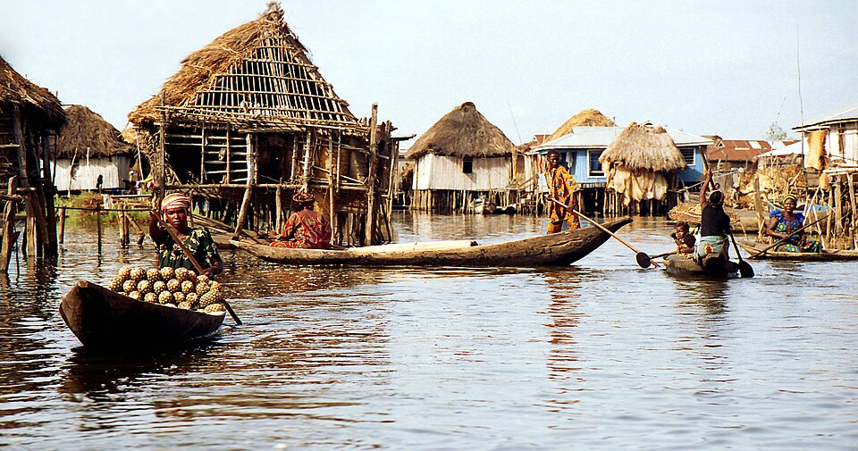
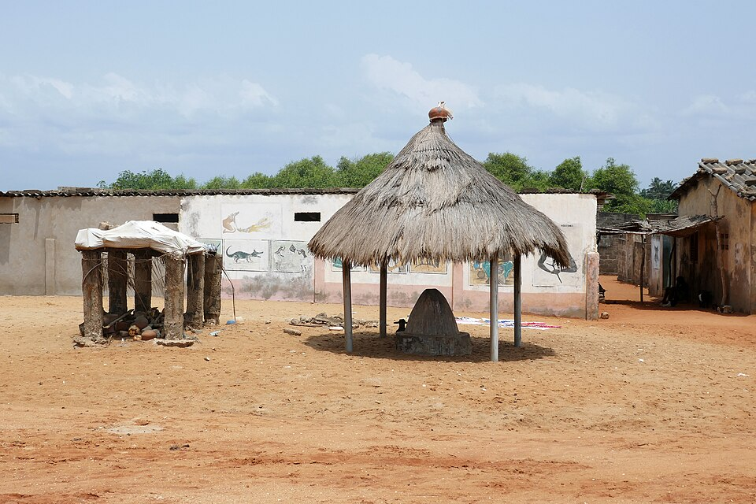

Ganvié
Sur le lac Nokoué, près de Cotonou, Ganvié est un village construit sur pilotis. Les habitants se déplacent en pirogue, et on y trouve même un marché flottant.
Le parc national de la Pendjari
Au nord-ouest du pays, la Pendjari est l'une des réserves les mieux préservées d'Afrique de l'Ouest. On peut y voir des éléphants, des buffles, des hippopotames et parfois des lions. Elle fait partie du complexe W-Arly-Pendjari, inscrit à l'UNESCO.
Les chutes de Kota
Près de Natitingou, dans l'Atacora, les chutes de Kota sont un endroit agréable pour se baigner et pique-niquer, surtout pendant la saison des pluies.
Grand-Popo et la Bouche du Roy
À l'ouest de la côte, Grand-Popo offre de longues plages. Non loin de là, à la Bouche du Roy, le fleuve Mono rejoint l'océan au milieu des mangroves.





- Photos de Wikimedia Commons :
- Ganvié, Ondřej Havelka, CC BY-SA 4.0
- Ganvié, Manu25, CC BY-SA 3.0
- Éléphants de la Pendjari, Marc Auer, CC BY 2.0
- Chutes de Kota, Ji-Elle, CC BY-SA 4.0
- Grand-Popo, Ji-Elle, CC BY-SA 4.0
- Bouche du Roy, Kulttuurinavigaattori, CC BY-SA 4.0